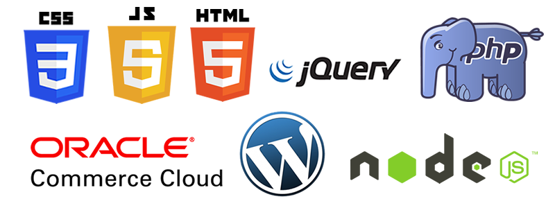

Programa de Capacitação Compasso
Módulo front-end - parte 1

Tobias Rocha da Rosa
Olá, eu sou o Tobias
- Desenvolvedor front-end +- 5 anos
- Entusiasta do mundo OpenSource
- Trabalho na compasso há 2 anos e 5 meses
Tecnologias com as quais já trabalhei
Alguns projetos que já trabalhei na Compasso
Apresentações
Roteiro das aulas
- Explanação de conteúdo
- Exercício para fixar os assuntos abordados
- Acompanhamento das atividades através do github
Primeiros passos com git e github
- Criar um repositório no github chamado capacitacao-compasso-modulo-front-end
- Clonar o repositório para o seu local